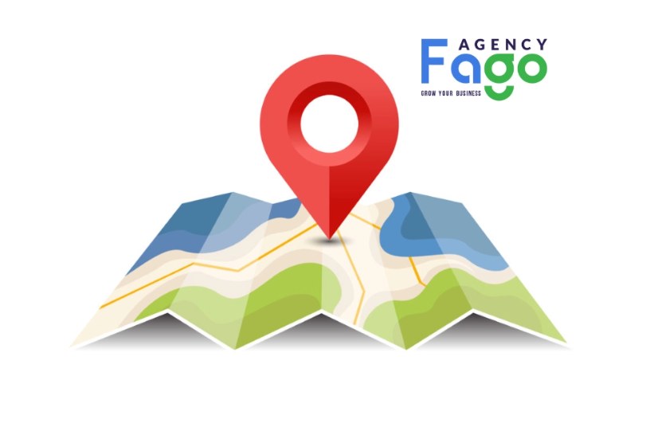
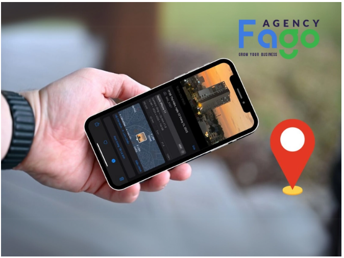
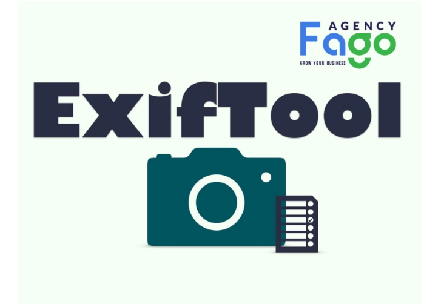
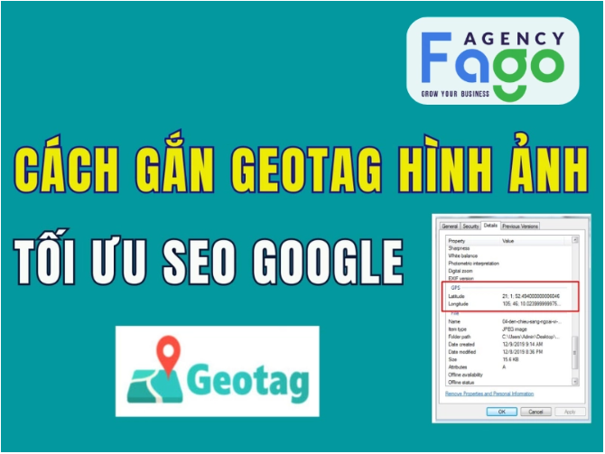
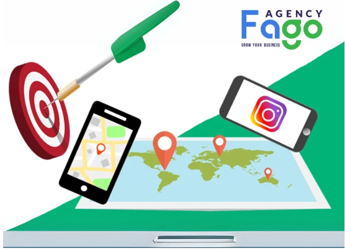
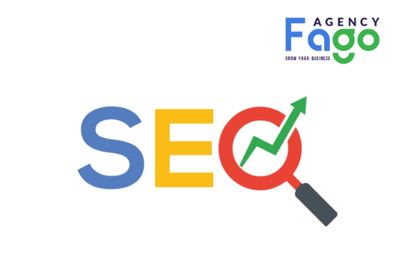

Geotag Là Gì? Cách Gắn Geotag Hình Ảnh Chuẩn SEO
Khám phá Content Angle là gì? Tìm hiểu định nghĩa, vai trò và cách ứng dụng Content Angle hiệu quả trong chiến lược content marketing. Tìm hiểu ngay!
Trong thời đại số hóa hiện nay, việc tối ưu hóa nội dung trực tuyến không chỉ dừng lại ở văn bản mà còn mở rộng sang hình ảnh, video và các yếu tố khác. Tuy nhiên, nhiều người vẫn chưa hiểu rõ về geotag và những ứng dụng thực tiễn mà nó mang lại. Vậy, geotag là gì? Hãy cùng Fago Agency khám phá chi tiết về geotag, từ khái niệm, lợi ích đến cách áp dụng.
1. Geotag là gì?
Geotag là một thuật ngữ dùng để chỉ dữ liệu địa lý được gắn vào các file như ảnh, video, hoặc bài đăng trên mạng xã hội. Những dữ liệu này giúp xác định vị trí cụ thể nơi nội dung được tạo ra hoặc liên quan đến. Ví dụ, khi bạn chụp một bức ảnh tại Hồ Gươm, dữ liệu geotag sẽ lưu trữ thông tin về vị trí chính xác của Hồ Gươm, bao gồm tọa độ địa lý và các thông tin liên quan.
Các thành phần của geotag:
- Tọa độ (latitude, longitude): Đây là thông tin cơ bản nhất của geotag, xác định vị trí chính xác trên bản đồ.
- Độ cao (altitude): Thông tin về độ cao so với mực nước biển, hữu ích trong các ứng dụng như du lịch hoặc thể thao.
- Hướng (direction): Xác định hướng mà thiết bị đang đối diện khi tạo nội dung, chẳng hạn như hướng bắc, nam, đông hoặc tây.
- Độ chính xác (accuracy): Mức độ chính xác của thông tin vị trí, thường phụ thuộc vào thiết bị và phương pháp định vị.
Cách thức hoạt động:
- Geotag hoạt động dựa trên các công nghệ định vị như GPS, Wi-Fi, và mạng di động để xác định vị trí.
- Khi bạn chụp ảnh hoặc quay video, thiết bị của bạn sẽ thu thập thông tin vị trí thông qua các công nghệ này và nhúng chúng vào metadata của file.
- Metadata là tập hợp các thông tin ẩn trong file, bao gồm ngày giờ, định dạng file, và đặc biệt là dữ liệu vị trí.
- Các thiết bị và ứng dụng hiện đại như điện thoại thông minh, máy ảnh kỹ thuật số, hoặc các ứng dụng mạng xã hội đều có khả năng đọc và hiển thị thông tin geotag.
Ví dụ, khi bạn mở một bức ảnh trên Google Photos, ứng dụng có thể hiển thị bản đồ với vị trí chính xác nơi bức ảnh được chụp.

2. Tại sao cần gắn geotag cho hình ảnh?
Tối ưu hóa SEO:
- Hỗ trợ công cụ tìm kiếm: Khi bạn gắn geotag, các công cụ tìm kiếm như Google có thể hiểu rõ hơn về nội dung và vị trí của hình ảnh. Điều này giúp hình ảnh của bạn dễ dàng xuất hiện trong các kết quả tìm kiếm liên quan đến địa phương.
- Cải thiện thứ hạng tìm kiếm: Hình ảnh được gắn geotag có khả năng xuất hiện cao hơn trên Google Images, đặc biệt khi người dùng tìm kiếm theo từ khóa liên quan đến địa điểm.
- Tăng khả năng hiển thị: Trong các tìm kiếm địa phương, hình ảnh có geotag sẽ được ưu tiên hiển thị, giúp doanh nghiệp của bạn nổi bật hơn trước đối thủ.
Tăng cường tương tác:
- Thu hút người dùng: Người dùng thường có xu hướng quan tâm đến nội dung liên quan đến địa điểm họ đang tìm kiếm. Ví dụ, một bức ảnh đẹp về quán cà phê tại Đà Lạt với geotag sẽ thu hút sự chú ý của những người đang tìm kiếm địa điểm du lịch tại đây.
- Tạo sự tin cậy: Hình ảnh có geotag không chỉ chuyên nghiệp mà còn tạo cảm giác chân thực, đáng tin cậy hơn đối với người xem.
Hỗ trợ các ứng dụng và dịch vụ dựa trên vị trí:
- Chia sẻ trên mạng xã hội: Khi bạn chia sẻ hình ảnh với geotag trên các nền tảng như Instagram hoặc Facebook, thông tin vị trí sẽ được hiển thị, giúp người xem dễ dàng hình dung và tương tác.
- Ứng dụng tìm kiếm địa điểm: Các ứng dụng như Google Maps, TripAdvisor thường sử dụng geotag để hiển thị hình ảnh liên quan đến địa điểm, hỗ trợ người dùng trong việc tìm kiếm và khám phá.

3. Cách gắn geotag cho hình ảnh chuẩn SEO
Bước 1: Bật định vị GPS trên thiết bị
Để bắt đầu, bạn cần bật tính năng định vị GPS trên thiết bị của mình. Đây là bước cơ bản để thiết bị có thể thu thập thông tin vị trí chính xác.
- Trên điện thoại thông minh:
- Với Android: Vào Cài đặt > Vị trí > Bật GPS. Đảm bảo chọn chế độ "Độ chính xác cao" để có kết quả tốt nhất.
- Với iPhone: Vào Cài đặt > Quyền riêng tư > Dịch vụ định vị > Bật Dịch vụ định vị. Sau đó, cấp quyền cho ứng dụng máy ảnh để truy cập vị trí.
- Trên máy ảnh kỹ thuật số: Nhiều máy ảnh hiện đại có tích hợp GPS. Bạn cần kiểm tra trong menu cài đặt và bật tính năng GPS. Nếu máy ảnh của bạn không có GPS, bạn có thể sử dụng thiết bị gắn ngoài hỗ trợ định vị.
- Trên máy tính: Khi chỉnh sửa hình ảnh trên máy tính, bạn cần đảm bảo rằng phần mềm chỉnh sửa có thể truy cập dữ liệu vị trí từ file ảnh hoặc từ các công cụ gắn geotag.
Lưu ý: Độ chính xác của GPS có thể bị ảnh hưởng bởi môi trường xung quanh. Ví dụ, trong nhà hoặc khu vực có nhiều vật cản như tòa nhà cao tầng, tín hiệu GPS có thể không chính xác. Hãy kiểm tra kỹ thông tin trước khi sử dụng.
Bước 2: Sử dụng công cụ gắn geota
Sau khi bật định vị, bạn cần sử dụng các công cụ để gắn geotag vào hình ảnh. Dưới đây là một số công cụ phổ biến:
- Phần mềm trên máy tính:
- ExifTool: Một công cụ mạnh mẽ để chỉnh sửa metadata của file ảnh, bao gồm cả geotag.
- Geosetter: Phần mềm miễn phí, dễ sử dụng, cho phép bạn gắn và chỉnh sửa geotag dựa trên bản đồ.
- Ứng dụng di động:
- Photo Map: Ứng dụng này hiển thị hình ảnh của bạn trên bản đồ và cho phép bạn chỉnh sửa hoặc thêm geotag.
- GPS Photo Tagger: Một ứng dụng chuyên dụng để gắn geotag vào ảnh chụp từ điện thoại.
- Tiện ích mở rộng trình duyệt:
GeoTagging: Một tiện ích mở rộng giúp bạn gắn geotag trực tiếp từ trình duyệt, rất tiện lợi khi làm việc với hình ảnh trực tuyến.
Hướng dẫn sử dụng:
Ví dụ, với Geosetter, bạn chỉ cần:
- Tải ảnh lên phần mềm.
- Chọn vị trí trên bản đồ.
- Nhấn "Lưu" để gắn geotag vào metadata của ảnh.

Bước 3: Kiểm tra và chỉnh sửa geotag
Sau khi gắn geotag, việc kiểm tra lại thông tin là rất quan trọng để đảm bảo độ chính xác. Bạn có thể sử dụng các công cụ như ExifTool hoặc Google Photos để kiểm tra thông tin vị trí đã được gắn.
Nếu phát hiện sai sót, hãy chỉnh sửa lại bằng cách sử dụng các công cụ đã đề cập ở trên. Đảm bảo rằng thông tin vị trí khớp với nội dung của hình ảnh.
Bước 4: Tối ưu hóa hình ảnh và nội dung
Để hình ảnh đạt hiệu quả SEO cao nhất, bạn cần tối ưu hóa cả nội dung và metadata:
- Tên file: Đặt tên file chứa từ khóa liên quan đến vị trí, ví dụ: "ho-guom-hanoi.jpg".
- Alt text: Sử dụng từ khóa mô tả vị trí trong thẻ alt, ví dụ: "Hồ Gươm tại Hà Nội vào buổi sáng".
- Caption: Viết chú thích ngắn gọn, hấp dẫn, có chứa từ khóa liên quan đến vị trí.
Ngoài ra, hãy đảm bảo hình ảnh có chất lượng cao, kích thước phù hợp và nội dung liên quan đến vị trí để tăng khả năng hiển thị trên các công cụ tìm kiếm.

4. Lưu ý khi gắn geotag
Đảm bảo tính chính xác của geotag:
- Trước khi gắn geotag, hãy kiểm tra kỹ vị trí để tránh sai sót.
- Sử dụng các công cụ đáng tin cậy như Geosetter hoặc ExifTool để đảm bảo thông tin chính xác.
Không lạm dụng geotag:
- Chỉ gắn geotag cho những hình ảnh thực sự liên quan đến vị trí.
- Tránh việc gắn geotag tràn lan cho tất cả hình ảnh, điều này có thể làm giảm hiệu quả SEO và gây nhầm lẫn cho người dùng.
Tuân thủ nguyên tắc SEO:
- Kết hợp geotag với các kỹ thuật SEO khác như tối ưu hóa từ khóa, nội dung và liên kết để đạt hiệu quả tối ưu.
- Đảm bảo hình ảnh phù hợp với nội dung bài viết và không vi phạm các quy định về bản quyền.

5. Fago Agency – Cung cấp dịch vụ SEO uy tín
Khi nói đến tối ưu hóa SEO, đặc biệt là các kỹ thuật nâng cao như gắn geotag, Fago Agency tự hào là một trong những đơn vị tiên phong và uy tín trong lĩnh vực dịch vụ SEO. Với mục tiêu hỗ trợ các doanh nghiệp nhỏ và siêu nhỏ phát triển mạnh mẽ trên môi trường trực tuyến, chúng tôi luôn mang đến những giải pháp SEO toàn diện và hiệu quả.
Kinh nghiệm:
Fago Agency đã có nhiều năm hoạt động trong lĩnh vực SEO và marketing online, với đội ngũ chuyên gia giàu kinh nghiệm và am hiểu sâu sắc về các xu hướng công nghệ mới. Chúng tôi không chỉ là những người thực thi mà còn là đối tác chiến lược, đồng hành cùng doanh nghiệp trong việc xây dựng thương hiệu và tăng trưởng doanh thu.
Thành tích:
Fago Agency đã thực hiện thành công hàng trăm dự án SEO lớn nhỏ, từ các doanh nghiệp địa phương đến các thương hiệu quốc gia. Một số case study nổi bật có thể kể đến như:
- Tăng 200% lưu lượng truy cập tự nhiên cho một chuỗi cửa hàng thực phẩm sạch nhờ tối ưu hóa hình ảnh và gắn geotag.
- Đưa website của một khách sạn tại Đà Lạt lên top 3 Google Search trong vòng 3 tháng thông qua chiến lược SEO địa phương kết hợp geotag.
Dịch vụ:
Chúng tôi cung cấp đầy đủ các dịch vụ SEO, bao gồm:
- SEO Onpage: Tối ưu hóa nội dung, từ khóa, hình ảnh (bao gồm gắn geotag) và cấu trúc website.
- SEO Offpage: Xây dựng liên kết chất lượng, tăng độ uy tín cho website.
- SEO kỹ thuật: Cải thiện tốc độ tải trang, tối ưu hóa trải nghiệm người dùng và đảm bảo website thân thiện với công cụ tìm kiếm.
- SEO địa phương: Tập trung vào các yếu tố như geotag, Google My Business để giúp doanh nghiệp nổi bật trong tìm kiếm địa phương.
Cam kết:
- Chính sách bảo hành: Chúng tôi cam kết duy trì thứ hạng từ khóa và hiệu quả SEO trong thời gian dài.
- Báo cáo tiến độ: Khách hàng sẽ nhận được báo cáo chi tiết hàng tháng về hiệu quả chiến dịch, bao gồm các chỉ số như lưu lượng truy cập, thứ hạng từ khóa và tỷ lệ chuyển đổi.
Fago Agency luôn đặt lợi ích của khách hàng lên hàng đầu, đảm bảo rằng mỗi giải pháp SEO đều mang lại giá trị thực tiễn và bền vững.

Vậy bài viết trên đã trả lời cho câu hỏi Geotag là gì? Việc áp dụng các kỹ thuật như gắn geotag không chỉ giúp tối ưu hóa SEO mà còn nâng cao trải nghiệm người dùng. Geotag không chỉ là một công cụ hỗ trợ mà còn là cầu nối giúp doanh nghiệp tiếp cận gần hơn với khách hàng mục tiêu.
Fago Agency khuyến khích bạn áp dụng geotag cho hình ảnh của mình ngay hôm nay để tận dụng tối đa tiềm năng của công cụ này. Nếu bạn cần sự hỗ trợ chuyên nghiệp, đừng ngần ngại liên hệ với chúng tôi. Hãy để Fago Agency đồng hành cùng bạn trên hành trình chinh phục thị trường trực tuyến!